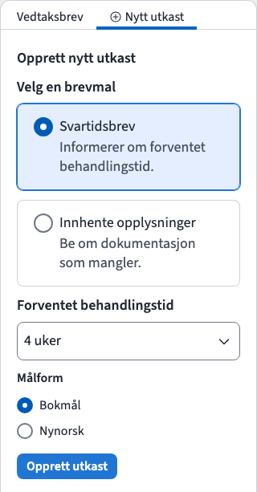
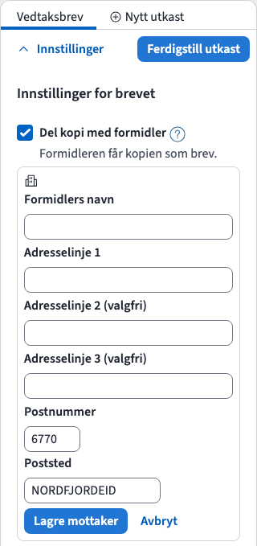

For saksbehandlere
Brev i Hotsak
Fra brevpanelet i saken kan du sende svartidsbrev og be om opplysninger som mangler. Du kan dele en kopi av brevet med formidler.
Du kan også sende svartidsbrev når du journalfører og oppretter en ny sak. Les om svartidsbrev ved journalføring.
Lag et nytt brev
Øverst i brevpanelet ser du en fane for hvert brev i saken. Trykk på fanen Nytt utkast for å lage et nytt brev. Fanen vises når du har tatt oppgaven.
Under Velg en brevmal velger du hvilket brev du vil lage:
- Svartidsbrev
- Informerer om forventet behandlingstid.
- Innhente opplysninger
- Ber om dokumentasjon som mangler.
Velg Målform, bokmål eller nynorsk, og trykk Opprett utkast.

Svartidsbrev
Velg Forventet behandlingstid: 4, 8, 12 eller 18 uker. I brevet må du fylle inn hvorfor saken ikke kan behandles tidligere. Deretter kan du forhåndsvise brevet eller sende det med en gang.
Innhente opplysninger
I brevet fyller du inn hvem som skal sende inn opplysningene, og hvilke opplysninger som mangler. Hvis søknaden var digital, har Hotsak fylt inn navnet og stillingen til formidler. Hvis søknaden var på papir, må du fylle inn dette selv.
Brevet går til formidler. Hvis søknaden var digital, har Hotsak lagt inn formidler som mottaker. Hvis søknaden var på papir, må du legge inn navn og adresse til formidler under Innstillinger. Der kan du også velge at bruker skal få brevet.
Send brevet
Trykk Forhåndsvis hvis du vil se hvordan brevet blir, og Send brev når det er klart.
Når du sender et brev om å innhente opplysninger, velger du hva som skal skje med saken etterpå:
- Fortsett behandling: Oppgaven blir ikke satt på vent, og du kan jobbe videre med saken.
- Sett på vent: Velg om oppgaven skal vente i 2, 3 eller 4 uker, eller velg en dato. Du kan skrive en kommentar, for eksempel om mangler som bør sjekkes i saken. Hvis det blir journalført et nytt dokument på saken mens den er på vent, blir oppgaven aktiv igjen.
Innstillinger for brevet
Trykk Innstillinger øverst i brevet for å velge hvem som skal få brevet. Under Mottakere ser du hvem brevet blir sendt til.
Kopi til formidler
For vedtaksbrev og svartidsbrev kan du velge Del kopi med formidler. Formidler får kopien som brev til arbeidsstedet sitt. Hvis søknaden var digital, ser formidler kopien også på sine innloggede sider.
Siden kopien sendes i posten, må du fylle inn adressen. Hvis søknaden var digital, har Hotsak fylt inn et forslag fra søknaden som du kan endre. Hvis søknaden var på papir, må du også fylle inn Formidlers navn. Trykk Lagre mottaker.
I brev om å innhente opplysninger er formidler alltid mottaker. Da står det Formidler er obligatorisk mottaker av brevet.

Send også til bruker
I brev om å innhente opplysninger kan du velge Send også til bruker. Eventuelle verger får da også brevet.
Slett et utkast
Vil du slette et brevutkast, åpner du Innstillinger og trykker Slett utkast. Du kan ikke angre slettingen.
Når blir brevet sendt?
Når du trykker Send brev, legges brevet til utsending. Det blir sendt automatisk neste virkedag kl. 08. Det gjelder både svartidsbrev og brev om å innhente opplysninger. I brevpanelet ser du Brev til distribusjon og tidspunktet brevet blir sendt.